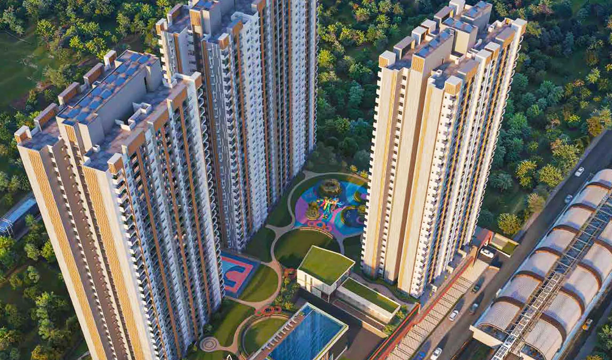
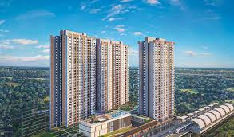
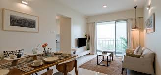
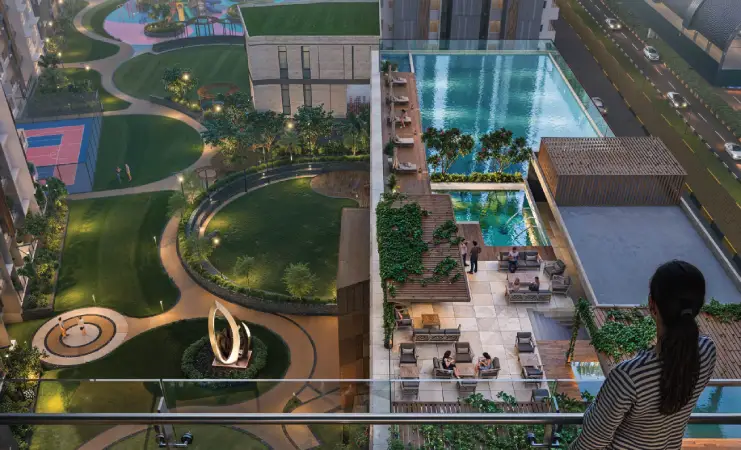
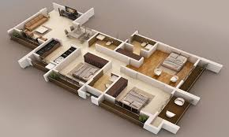

Godrej Emerald
Pimpri Chinchwad, Pune

   
Project Details
Configuration:
1,2,3 & 4 BHK Apartments.
Carpet Area:
460 sq. ft. to 2,024 sq. ft.
Towers:
7 Towers Each 32 Floor.
Location:
Pimpri-Chinchwad area Pune, near the Sant Tukaram Nagar Metro Station and ICC Devi Gaurav Technology Park.
Price:
73 Lacs to 3CR
Possession:
March 2028 (for some phases).
Developer:
Kolte Patil Developers
Floors:
2 Basements + Ground + 32 Floors.
Status:
Under Construction
Land Area:
9.61 acres.
Configuration:
Offers 1, 2, 3, 4, 5 BHK premium flats
Amenities
Water & Relaxation: Half Olympic-sized infinity swimming pool, kids' pool, aqua treadmill, resistance pool, and a jacuzzi.
Club House
Gym & Yoga Center
Nature & Wellness: Flower tunnel, mist garden, herb-themed garden, organic orchard, and "work from garden" spaces.
Children Play Area
24x7 Security
Power Backup
Golf Court
Terrace Garden
Open-to-sky swimming pool, sky gazing area, and wooden trellis.
Fully-equipped gymnasium, jogging track, and acupressure pathway.
Multipurpose turf, kids' play area, senior citizen zone, and landscaped gardens.
Rainwater harvesting, sewage treatment plant, and waste management systems.
Experience the Lifestyle
Your browser does not support the video tag.
Pay ₹5000 Token
Project Location